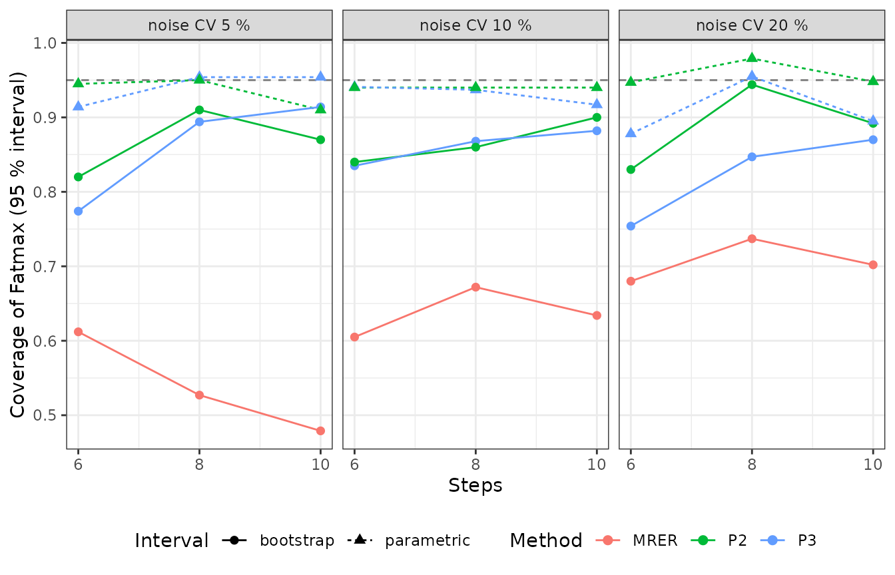
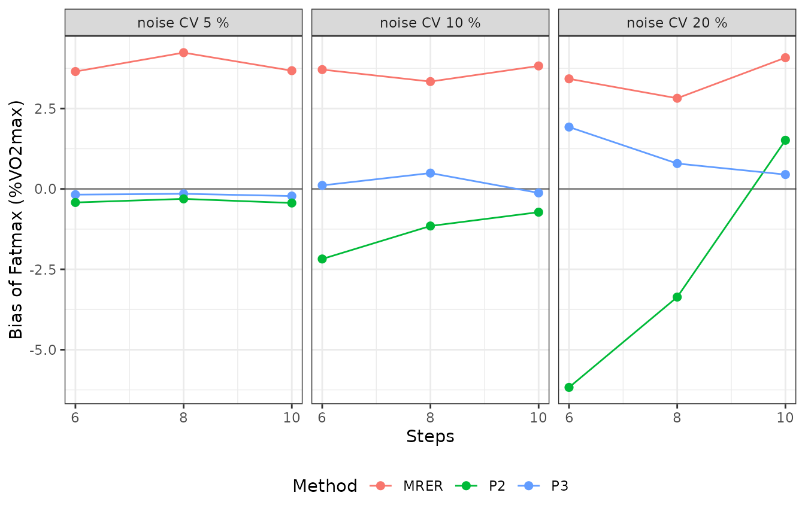

MFO(ci = ) gives confidence intervals for the fit of one
test (SPEC 13.1). This article reports how often those intervals contain
the true value in simulated tests whose truth is known. The results were
computed once, with inst/validation/bootstrap_coverage.R,
and are written into this article; running the study takes about an
hour, so it is not run when the article is built.
Design
Each simulated test comes from simulate_MFO_sessions():
one participant from the default population (sedentary adults,
Amaro-Gahete et al. 2018), VO2max 3000 ± 400 mL/min, fat oxidation
following a SIN curve (Chenevière et al. 2009) and an error on the fat
oxidation of each step with standard deviation equal to a proportion of
MFO (the noise CV, SPEC 17). The grid crosses the method (P3, P2, MRER),
the number of steps (6, 8, 10) and the noise CV (5, 10, 20 %), with 200
tests per cell and B = 400 replicates per interval. The truth is the
Fatmax and MFO of the generating SIN curve.
Two caveats:
- The truth is a SIN curve. This favours the models closest to a SIN: P3 more than P2, and both much more than MRER. A different truth would give different biases.
- Different draws. The rows of the residual bootstrap and of the parametric interval come from separate runs of the same design with different simulated tests; MRER was run with the residual bootstrap only. The P2 rows were rerun after the fix of #38 (a parabola without a maximum now falls back to MV instead of returning its minimum).
cov <- structure(list(ci = c("bootstrap", "bootstrap", "bootstrap",
"bootstrap", "bootstrap", "bootstrap", "bootstrap", "bootstrap",
"bootstrap", "bootstrap", "bootstrap", "bootstrap", "bootstrap",
"bootstrap", "bootstrap", "bootstrap", "bootstrap", "bootstrap",
"bootstrap", "bootstrap", "bootstrap", "bootstrap", "bootstrap",
"bootstrap", "bootstrap", "bootstrap", "bootstrap", "parametric",
"parametric", "parametric", "parametric", "parametric", "parametric",
"parametric", "parametric", "parametric", "parametric", "parametric",
"parametric", "parametric", "parametric", "parametric", "parametric",
"parametric", "parametric"), method = c("P3", "MRER", "P3", "MRER",
"P3", "MRER", "P3", "MRER", "P3", "MRER", "P3", "MRER", "P3",
"MRER", "P3", "MRER", "P3", "MRER", "P2", "P2", "P2", "P2", "P2",
"P2", "P2", "P2", "P2", "P3", "P3", "P3", "P3", "P3", "P3", "P3",
"P3", "P3", "P2", "P2", "P2", "P2", "P2", "P2", "P2", "P2", "P2"
), steps = c(6L, 6L, 8L, 8L, 10L, 10L, 6L, 6L, 8L, 8L, 10L, 10L,
6L, 6L, 8L, 8L, 10L, 10L, 6L, 8L, 10L, 6L, 8L, 10L, 6L, 8L, 10L,
6L, 8L, 10L, 6L, 8L, 10L, 6L, 8L, 10L, 6L, 8L, 10L, 6L, 8L, 10L,
6L, 8L, 10L), fat_noise_cv = c(0.05, 0.05, 0.05, 0.05, 0.05,
0.05, 0.1, 0.1, 0.1, 0.1, 0.1, 0.1, 0.2, 0.2, 0.2, 0.2, 0.2,
0.2, 0.05, 0.05, 0.05, 0.1, 0.1, 0.1, 0.2, 0.2, 0.2, 0.05, 0.05,
0.05, 0.1, 0.1, 0.1, 0.2, 0.2, 0.2, 0.05, 0.05, 0.05, 0.1, 0.1,
0.1, 0.2, 0.2, 0.2), tests = c(199L, 170L, 198L, 169L, 198L,
167L, 188L, 167L, 190L, 177L, 187L, 161L, 187L, 172L, 177L, 171L,
184L, 171L, 200L, 200L, 200L, 200L, 200L, 200L, 194L, 195L, 194L,
198L, 195L, 197L, 186L, 189L, 192L, 181L, 179L, 172L, 200L, 200L,
200L, 200L, 199L, 200L, 188L, 191L, 193L), coverage_fatmax = c(0.774,
0.612, 0.894, 0.527, 0.914, 0.479, 0.835, 0.605, 0.868, 0.672,
0.882, 0.634, 0.754, 0.68, 0.847, 0.737, 0.87, 0.702, 0.82, 0.91,
0.87, 0.84, 0.86, 0.9, 0.83, 0.944, 0.892, 0.914, 0.954, 0.954,
0.941, 0.937, 0.917, 0.878, 0.955, 0.895, 0.945, 0.95, 0.91,
0.94, 0.94, 0.94, 0.947, 0.979, 0.948), coverage_mfo = c(0.794,
0.676, 0.874, 0.592, 0.894, 0.509, 0.846, 0.796, 0.874, 0.785,
0.936, 0.708, 0.759, 0.773, 0.881, 0.772, 0.87, 0.877, 0.83,
0.905, 0.88, 0.85, 0.94, 0.905, 0.861, 0.944, 0.892, 0.949, 0.959,
0.959, 0.952, 0.974, 0.917, 0.917, 0.911, 0.924, 0.94, 0.965,
0.93, 0.975, 0.97, 0.98, 0.941, 0.948, 0.943), width_fatmax = c(9.188,
8.491, 8.663, 7.435, 8.318, 6.132, 16.154, 11.979, 14.833, 10.908,
14.657, 10.315, 24.045, 16.384, 25.54, 17.82, 25.75, 16.953,
11.328, 17.984, 12.826, 62.425, 62.407, 40.189, 107.173, 130.501,
135.998, 18.537, 12.653, 10.242, 24.464, 20.518, 16.597, 32.715,
28.512, 26.643, 25.543, 16.912, 11.071, 84.485, 62.237, 67.395,
158.484, 126.361, 108.045), bias_fatmax = c(-0.178, 3.65, -0.152,
4.237, -0.222, 3.676, 0.109, 3.71, 0.492, 3.338, -0.124, 3.824,
1.924, 3.423, 0.789, 2.819, 0.447, 4.08, -0.422, -0.31, -0.438,
-2.179, -1.153, -0.724, -6.172, -3.363, 1.513, -0.256, 0.221,
-0.379, 0.714, 0.249, 0.091, 1.571, 0.314, 1.428, -0.056, -0.05,
-0.036, 0.933, -1.238, -0.568, 0.127, -7.002, -1.465), rmse_fatmax = c(3.064,
5.633, 2.601, 6.023, 2.45, 5.268, 4.967, 6.461, 4.101, 5.567,
4.503, 5.652, 9.849, 6.055, 8.208, 6.339, 8.848, 7.313, 3.529,
4.931, 4.425, 21.135, 11.27, 9.196, 47.708, 22.777, 39.504, 2.875,
2.486, 2.304, 5.135, 4.854, 4.341, 9.123, 8.17, 7.949, 5.317,
3.461, 3.059, 16.119, 8.632, 11.45, 49.414, 106.315, 15.668),
bias_mfo_pct = c(0.605, 4.57, 0.794, 4.923, 0.563, 4.351,
1.709, 4.45, 1.116, 3.433, 0.585, 3.411, 5.505, 6.812, 2.942,
4.668, 3.466, 4.214, -0.17, 0.053, -0.057, 2.284, 1.627,
0.67, 8.932, 2.97, 6.136, 0.239, -0.02, 0.511, 1.419, 1.568,
1.412, 4.796, 4.203, 3.054, -0.222, -0.308, -0.338, 0.973,
0.812, 1.442, 8.911, 4.399, 1.875)), row.names = c(NA, -45L
), class = "data.frame")
cov$noise <- factor(paste0("noise CV ", 100 * cov$fat_noise_cv, " %"),
levels = paste0("noise CV ", c(5, 10, 20), " %"))The ideal case
Before the grid, a test where the model is right: P2 fitted to a parabola with 8 steps and independent normal errors (500 tests, B = 500).
| Interval | Coverage of Fatmax | Coverage of MFO | Mean width of Fatmax |
|---|---|---|---|
"bootstrap" (modified residuals) |
0.882 | 0.892 | 1.93 %VO2max |
"parametric", fixed sigma (first version) |
0.892 | 0.896 | 1.95 %VO2max |
"parametric", sigma drawn (current) |
0.944 | 0.954 | 2.54 %VO2max |
The residual bootstrap and a parametric bootstrap with a fixed sigma behave like a z interval: with n - p = 5 degrees of freedom their coverage is close to P(|t5| < 1.96) = 0.893. Drawing sigma^2 from its posterior, Inv-chi^2(n - p, s^2), carries the uncertainty of sigma and restores the nominal coverage (binomial standard error 0.010).
Coverage of Fatmax
ggplot(cov, aes(steps, coverage_fatmax, colour = method, linetype = ci,
shape = ci)) +
geom_hline(yintercept = 0.95, linetype = "dashed", colour = "grey50") +
geom_line() + geom_point(size = 2) +
facet_wrap(~noise) +
scale_x_continuous(breaks = c(6, 8, 10)) +
labs(x = "Steps", y = "Coverage of Fatmax (95 % interval)",
colour = "Method", linetype = "Interval", shape = "Interval") +
theme_bw() + theme(legend.position = "bottom")
With the parametric interval, P3 covered 0.88-0.96 and P2 0.91-0.98 of the true Fatmax; the residual bootstrap stayed at 0.75-0.94. P2 covers well at high noise only because its intervals become very wide (next table). MRER covered 0.48-0.74.
Why P2 intervals are so wide at 10-20 % noise: the vertex of a parabola, -b / (2c), is a ratio of two noisy estimates, and when the curvature c is close to 0 it lands far outside the measured intensities. Parabolas with no maximum at all (c >= 0) are rare and now fall back to MV: 0 of 200 tests at 5 % noise, 0-1 at 10 % and 5-12 at 20 %, and 7-12 % of the replicates at 20 % noise. The wide intervals come from replicates with c slightly below 0, which is the situation flagged by the P2 warning on a vertex outside the measured range.
Bias and width
tab <- cov[order(cov$method, cov$ci, cov$fat_noise_cv, cov$steps),
c("method", "ci", "steps", "fat_noise_cv", "tests", "coverage_fatmax",
"coverage_mfo", "width_fatmax", "bias_fatmax", "bias_mfo_pct")]
tab$fat_noise_cv <- 100 * tab$fat_noise_cv
names(tab) <- c("Method", "Interval", "Steps", "Noise CV %", "Tests",
"Cover Fatmax", "Cover MFO", "Width Fatmax", "Bias Fatmax",
"Bias MFO %")
knitr::kable(tab, row.names = FALSE, digits = 2)| Method | Interval | Steps | Noise CV % | Tests | Cover Fatmax | Cover MFO | Width Fatmax | Bias Fatmax | Bias MFO % |
|---|---|---|---|---|---|---|---|---|---|
| MRER | bootstrap | 6 | 5 | 170 | 0.61 | 0.68 | 8.49 | 3.65 | 4.57 |
| MRER | bootstrap | 8 | 5 | 169 | 0.53 | 0.59 | 7.43 | 4.24 | 4.92 |
| MRER | bootstrap | 10 | 5 | 167 | 0.48 | 0.51 | 6.13 | 3.68 | 4.35 |
| MRER | bootstrap | 6 | 10 | 167 | 0.60 | 0.80 | 11.98 | 3.71 | 4.45 |
| MRER | bootstrap | 8 | 10 | 177 | 0.67 | 0.78 | 10.91 | 3.34 | 3.43 |
| MRER | bootstrap | 10 | 10 | 161 | 0.63 | 0.71 | 10.31 | 3.82 | 3.41 |
| MRER | bootstrap | 6 | 20 | 172 | 0.68 | 0.77 | 16.38 | 3.42 | 6.81 |
| MRER | bootstrap | 8 | 20 | 171 | 0.74 | 0.77 | 17.82 | 2.82 | 4.67 |
| MRER | bootstrap | 10 | 20 | 171 | 0.70 | 0.88 | 16.95 | 4.08 | 4.21 |
| P2 | bootstrap | 6 | 5 | 200 | 0.82 | 0.83 | 11.33 | -0.42 | -0.17 |
| P2 | bootstrap | 8 | 5 | 200 | 0.91 | 0.90 | 17.98 | -0.31 | 0.05 |
| P2 | bootstrap | 10 | 5 | 200 | 0.87 | 0.88 | 12.83 | -0.44 | -0.06 |
| P2 | bootstrap | 6 | 10 | 200 | 0.84 | 0.85 | 62.42 | -2.18 | 2.28 |
| P2 | bootstrap | 8 | 10 | 200 | 0.86 | 0.94 | 62.41 | -1.15 | 1.63 |
| P2 | bootstrap | 10 | 10 | 200 | 0.90 | 0.90 | 40.19 | -0.72 | 0.67 |
| P2 | bootstrap | 6 | 20 | 194 | 0.83 | 0.86 | 107.17 | -6.17 | 8.93 |
| P2 | bootstrap | 8 | 20 | 195 | 0.94 | 0.94 | 130.50 | -3.36 | 2.97 |
| P2 | bootstrap | 10 | 20 | 194 | 0.89 | 0.89 | 136.00 | 1.51 | 6.14 |
| P2 | parametric | 6 | 5 | 200 | 0.94 | 0.94 | 25.54 | -0.06 | -0.22 |
| P2 | parametric | 8 | 5 | 200 | 0.95 | 0.96 | 16.91 | -0.05 | -0.31 |
| P2 | parametric | 10 | 5 | 200 | 0.91 | 0.93 | 11.07 | -0.04 | -0.34 |
| P2 | parametric | 6 | 10 | 200 | 0.94 | 0.98 | 84.48 | 0.93 | 0.97 |
| P2 | parametric | 8 | 10 | 199 | 0.94 | 0.97 | 62.24 | -1.24 | 0.81 |
| P2 | parametric | 10 | 10 | 200 | 0.94 | 0.98 | 67.39 | -0.57 | 1.44 |
| P2 | parametric | 6 | 20 | 188 | 0.95 | 0.94 | 158.48 | 0.13 | 8.91 |
| P2 | parametric | 8 | 20 | 191 | 0.98 | 0.95 | 126.36 | -7.00 | 4.40 |
| P2 | parametric | 10 | 20 | 193 | 0.95 | 0.94 | 108.04 | -1.47 | 1.88 |
| P3 | bootstrap | 6 | 5 | 199 | 0.77 | 0.79 | 9.19 | -0.18 | 0.60 |
| P3 | bootstrap | 8 | 5 | 198 | 0.89 | 0.87 | 8.66 | -0.15 | 0.79 |
| P3 | bootstrap | 10 | 5 | 198 | 0.91 | 0.89 | 8.32 | -0.22 | 0.56 |
| P3 | bootstrap | 6 | 10 | 188 | 0.84 | 0.85 | 16.15 | 0.11 | 1.71 |
| P3 | bootstrap | 8 | 10 | 190 | 0.87 | 0.87 | 14.83 | 0.49 | 1.12 |
| P3 | bootstrap | 10 | 10 | 187 | 0.88 | 0.94 | 14.66 | -0.12 | 0.58 |
| P3 | bootstrap | 6 | 20 | 187 | 0.75 | 0.76 | 24.05 | 1.92 | 5.50 |
| P3 | bootstrap | 8 | 20 | 177 | 0.85 | 0.88 | 25.54 | 0.79 | 2.94 |
| P3 | bootstrap | 10 | 20 | 184 | 0.87 | 0.87 | 25.75 | 0.45 | 3.47 |
| P3 | parametric | 6 | 5 | 198 | 0.91 | 0.95 | 18.54 | -0.26 | 0.24 |
| P3 | parametric | 8 | 5 | 195 | 0.95 | 0.96 | 12.65 | 0.22 | -0.02 |
| P3 | parametric | 10 | 5 | 197 | 0.95 | 0.96 | 10.24 | -0.38 | 0.51 |
| P3 | parametric | 6 | 10 | 186 | 0.94 | 0.95 | 24.46 | 0.71 | 1.42 |
| P3 | parametric | 8 | 10 | 189 | 0.94 | 0.97 | 20.52 | 0.25 | 1.57 |
| P3 | parametric | 10 | 10 | 192 | 0.92 | 0.92 | 16.60 | 0.09 | 1.41 |
| P3 | parametric | 6 | 20 | 181 | 0.88 | 0.92 | 32.72 | 1.57 | 4.80 |
| P3 | parametric | 8 | 20 | 179 | 0.96 | 0.91 | 28.51 | 0.31 | 4.20 |
| P3 | parametric | 10 | 20 | 172 | 0.90 | 0.92 | 26.64 | 1.43 | 3.05 |
Tests counts below 200 are tests in which the fit fell back to another method (P3 to P2, MRER to MV), which gives no interval. The bias is the mean estimate minus the truth (%VO2max for Fatmax, % of MFO for MFO).
ggplot(cov[cov$ci == "bootstrap", ], aes(steps, bias_fatmax, colour = method)) +
geom_hline(yintercept = 0, colour = "grey50") +
geom_line() + geom_point(size = 2) +
facet_wrap(~noise) +
scale_x_continuous(breaks = c(6, 8, 10)) +
labs(x = "Steps", y = "Bias of Fatmax (%VO2max)", colour = "Method") +
theme_bw() + theme(legend.position = "bottom")
What to use
-
ci = "parametric"(orci = TRUE) with P3: the closest to the nominal 95 %, with intervals that narrow as steps are added. -
P2 is nearly unbiased at low noise, but it is not
recommended with high noise: its vertex, -b / (2c), is unstable when the
curvature is close to 0 and can fall far outside the measured
intensities. The warning of a vertex outside the measured range is the
signal;
MFO()also flags the interval then. - MRER overestimates Fatmax by 3-4 %VO2max and MFO by 3-7 % against SIN curves, and its interval is centred on that bias. It is kept for comparability with published studies, not as the main method.
- With 6 steps every interval is less reliable; 8 or more are preferable.
Reproducing
From the package source folder:
Rscript -e "devtools::load_all(); source('inst/validation/bootstrap_coverage.R')" \
--args parametric cov_parametric.csv P3,P2The script is resumable: each cell is saved when done and cells already in the output file are skipped.
References
Amaro-Gahete FJ, Sanchez-Delgado G, Ruiz JR (2018). Front Physiol 9: 1460. doi:10.3389/fphys.2018.01460
Chenevière X, Malatesta D, Peters EM, Borrani F (2009). Med Sci Sports Exerc 41: 1615-1625. doi:10.1249/MSS.0b013e31819e2f91
Davison AC, Hinkley DV (1997). Bootstrap Methods and their Application. Cambridge University Press.
Gelman A, et al. (2013). Bayesian Data Analysis, 3rd ed. Chapman & Hall/CRC.